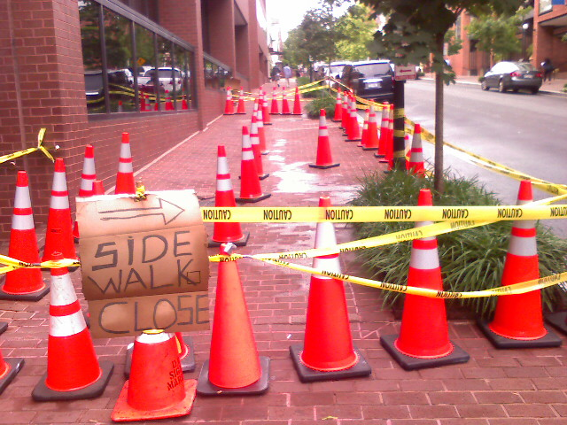
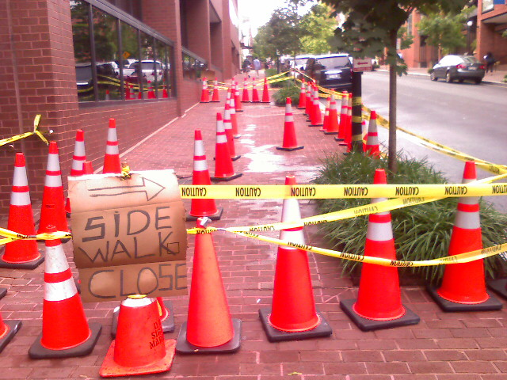
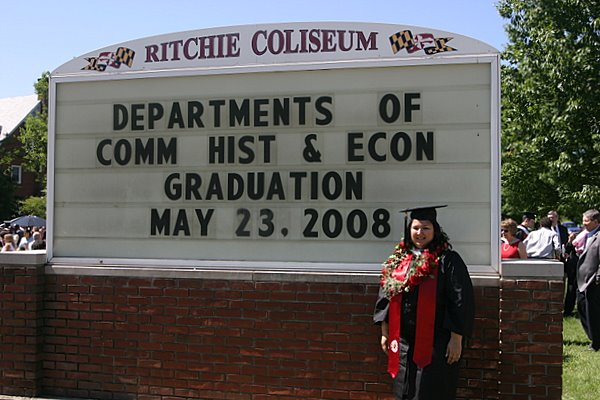
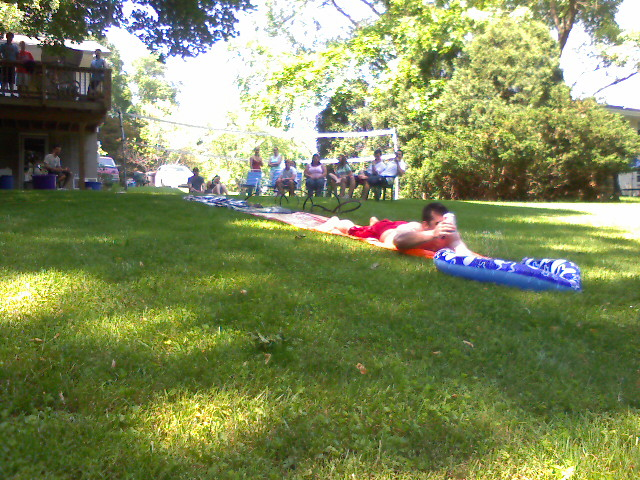
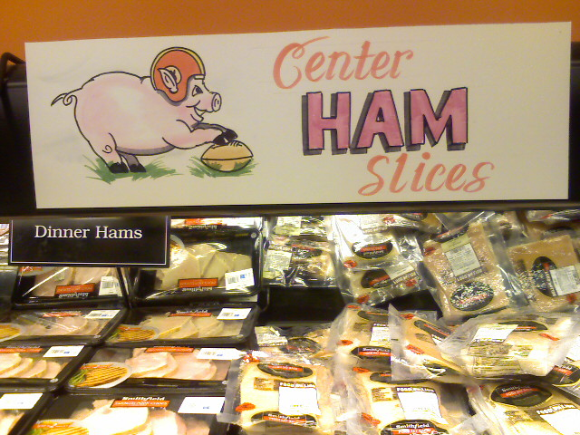
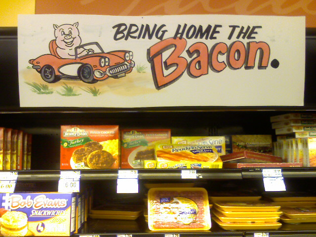

Sidewalk Closed

The sidewalk in front of my office was closed and the construction workers used an unneccesary large amount of traffic cones to get the idea across.


The sidewalk in front of my office was closed and the construction workers used an unneccesary large amount of traffic cones to get the idea across.
My roommate, Jaime, had to make a website about poetry for one of her classes. Her idea was to present the poems of several 19th century American poets along with a recording of a reading. Guess who got to lend his voice to the poetry reading? That’s right, it was me!
I was happy to help out with voice over work and recording. I borrowed a R0DE Podcaster Microphone from work and recorded everything into Garageband on a MacBook. I recited poems from Henry Wadsworth Longfellow, Emily Dickinson, and Walt Whitman.
from work and recorded everything into Garageband on a MacBook. I recited poems from Henry Wadsworth Longfellow, Emily Dickinson, and Walt Whitman.
In fact in the 8th grade one of my assignments was to memorize and recite in front of the class Whitman’s “O Captain! My Captain!” Even after all of these years the words flew off my tongue with ease.
Jaime’s site is pretty interesting and well designed for a first time website maker. Take a look around and take a listen to the other poems.
This is one of those “in the right place at the right time” kind of photos.
From the photo caption on Flickr:
Matamoros, Tamaulipas, Mexico(Monday June-2-2008) Seven competitors from yesterday cyclist race were severely injured after being hit by a drunk driver, one of them died and other three were hospitalized. The drunk driver was arrested after the rest of the participants tried to lynch him.
30 year old Alejandro Alvarez, from Brownsville,Texas, was pronounced dead on the scene, while Alejandro Salvador Tamez, 18, Juan Machaita, 38, and Guadalupe Martinez,, 16, were severely injured.
Cyclists were participating in a race from Matamoros to Bagdad Beach, when drunk driver Jesse Campos, a Brownsville, Texas resident, in his Ford Grand Marquis, license 659-FKF from Texas, impacted seven cyclists, even as they were being escorted by Local Transit Officials.
Source: The Daily Telegraph
Picture: Jose Fidelino Vera Hernandez
Twitter may be the king of the 140 character-limit hill but with it being down more than it is up, it is nice to have options. Pownce was seen as a possible “Twitter killer” offering a more stylish interface and a bevy of additional features like nested replies (keeping conversations neat and tidy) and embedded media options. But it says something when one of the main people behind Pownce, Kevin Rose, flings his Twitter address all over the place. It’s a real shame because Pownce is better organized and even includes a business model. Too bad it’s a virtual ghost town compared to the fluttering Twitter community.

Plurk is a similar service with a unique visual twist. Instead of reading your messages in a linear stream, Plurk displays your correspondents on an attractive timeline. Each Plurk can be directly responded to like a mini-forum eliminating the barrage of @ responses that comes with Twitter. Taking a page from Facebook’s status update feature, Plurk lets you specify an action like “is”, “likes”, “thinks” etc. which are uniquely colored similiar to the popular Twitter mashup Twistori. The site tips the scale when it comes to AJAX effects with lots of fading modal windows but provides a rich experience for consuming the stream of information presented before you.

The two most unique features that Plurk brings to the game are Cliques and Karma.
Cliques in Plurk are just like Cliques in real-life: an exclusive group of people. Plurk lets you separate your friends into different groups so you can better filter messages coming to you. Cliques also let you send out a message to a certain group of people so you can keep your messages to your family hidden from your group of co-workers.
Karma is a community status indicator so you can easily spot the active members from the passive on-lookers. Your score is calculated every day and is influenced by you and your friends Plurk activity as well as friend referrals. It’s a pretty clever idea by the site creators to help build buzz by giving a useless number to try and grow. Think of it like a score in a video game.
Plurk is still missing an open API so other people can build apps on top of the service and mobile support so people can send Plurks in while they are out and about. But Pownce was in the same boat when it first launched and adding those features hardly helped it’s market share. The real test will be if Plurk can attract the hordes of Twitter followers because microblogging services like this are only useful if the people you know (or want to know) are part of the game.
Oh and the mascot is a dog without a head.

Follow me on Plurk, Twitter, Pownce, and a bunch of other social services.
Twitter has been facing all kinds of problems lately. In light of this I figured I would share this funny Twitter exchange between Jason Calacanis and Stu Maschwitz I happened to capture a screenshot of several weeks ago.

Tonight while sitting in front of the TV I decided to play around in Photoshop. The graphic design process has always been a mystery to me so I wanted to experiment and come up with new ideas. The result of about an hour worth of work is this:

The whole process was off-the-cuff with no real goal in mind but here are the steps I took to get to the end result.
First, I started with dummy text from LoremIpscream.com and created a headline and body text. I wanted to keep things simple so I used black Helvetica text against a pure white background. My focus was on some sort of divider between the headline and body text. I had the idea for more decorative, curly ornament ends for the divider but after looking through the built-in custom shapes I came across the palm leaves. After spacing them out I drew a 4 pixel tall black line to connect them.
text against a pure white background. My focus was on some sort of divider between the headline and body text. I had the idea for more decorative, curly ornament ends for the divider but after looking through the built-in custom shapes I came across the palm leaves. After spacing them out I drew a 4 pixel tall black line to connect them.
The title needed something else to make it stand out so I changed the color to a deep, moody red color. I took great care in lining up the elements in the composition and adjusting line heights, or leading as they call it in the graphic design world, to make the text more readable. Up until this point I was just playing with type but now I figured I could turn it into a basic web page layout.
I added a vertical rectangle with rounded corners that is oh so popular these days as a background. Thanks to the web 2.0 layer styles pack I could play around with different gradients to see their effect on the page. I settled for a white-light gray vertical gradient.
Things were starting to come together and to help set the mood even more I used a dark red gradient for the background. This also made the main content stick out by creating some depth. I also made sure both the background and foreground were lighter at the top and faded to a darker color at the bottom for consistency. At this point the title color and background color were slightly different so I used the eye dropper tool to grab a color from the background gradient in roughly the same spot as the title.
Finally I did a quick Google search for wine bottles and glasses to give my imaginary page some visuals. The deep red color reminded me of red wine so I figured it would be a good fit.
You can download my final PSD and have a poke around yourself. Even though it isn’t much to look at I had a lot of fun exploring design techniques and just playing around. Let me know what you think by leaving a comment.
On May 23rd, Kristina graduated from the University of Maryland at College Park with two B.A. degrees. One was in Communication Studies and the other in Art Studio – Graphic Design. I took a photo and posted it from my mobile phone on that day but here are the rest of the pictures from the day.
Kristina in disbelief that she is finally graduating.
On stage with diploma in hand.
Walking back to her seat.
A picture of the happy family.
My turn in front of the camera.
Flowers, diploma, and mortar board! Oh My!
Kristina's aunt got her a garland.
Showing off her stoll.

Posing by the sign to mark graduation day.
The whole shebang.
Now comes the job search. Stay tuned…

One $8 Slip ‘n Slide + a black plastic tarp + dishwashing detergent + beer = one fun memorial day!


Kristina and I had to stop by Food Lion to pick up a few things for her mom. I noticed these funny hand-drawn cartoon signs above the meats.
Today is Kristina’s graduation. My favorite line from the keynote speech: “The graduating class is overwhelmed with technology, cell phones, blogs, faxes…” Yea I just can’t keep up with all of those faxes.